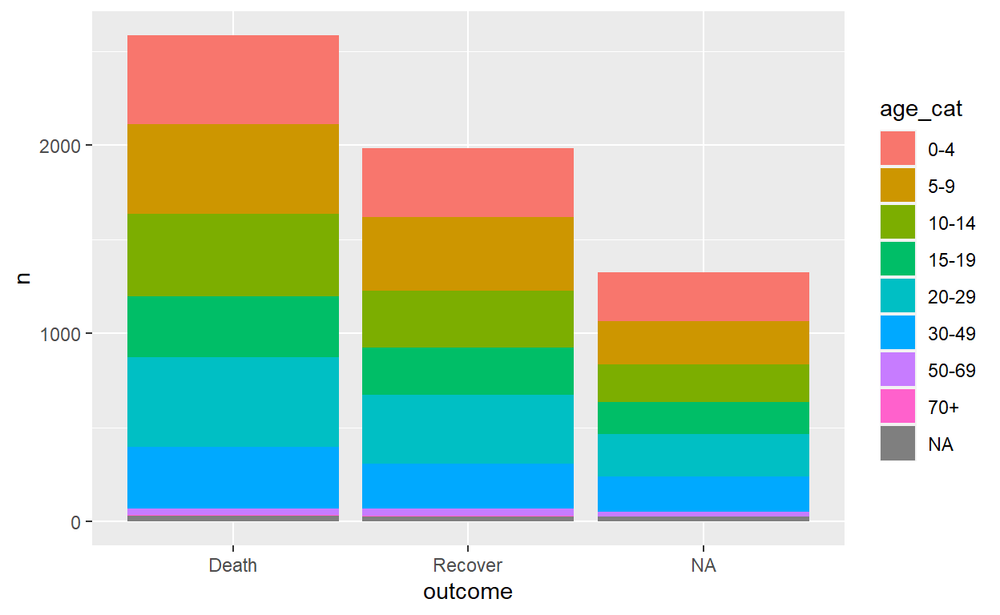
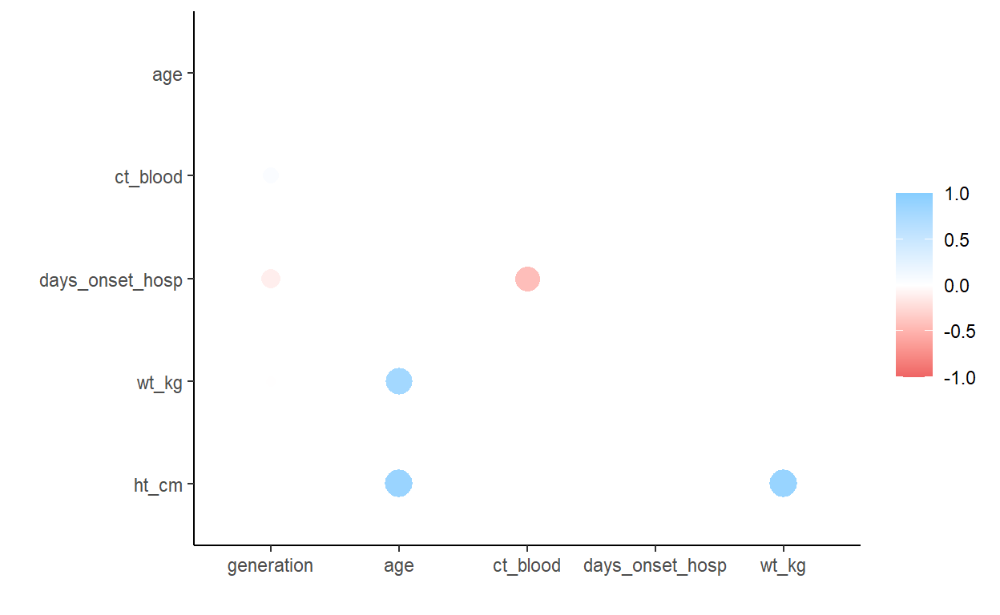

Introduction to R for Applied Epidemiology and Public Health
Data cleaning and core functions

Welcome
Welcome to the course “Introduction to R for applied epidemiologists”, offered for free by Applied Epi - a non-profit organisation that offers open-source tools, training, and support to frontline public health practitioners.
This interactive tutorial focuses on cleaning of datasets often encountered by applied epidemiologists and public health practitioners, such as outbreak linelists, surveillance, and laboratory data.
Target Audience
This course is designed with the following objectives:
- To be friendly to people who have never used a programming language before
- To teach R emphasizing examples, datasets, and challenges commonly faced by applied epidemiologists
- To be modular - so that you can skip to section most relevant to you
If this is your first introduction to R programming, please consider first completing our [R Setup and Data Import tutorial], which introduces R, RStudio, R projects, R code syntax, and explains how to import a dataset into R.
Other languages
This course is available…
Offline / Online
You can access this tutorial offline by downloading our R package … If viewing offline, you can view the videos by doing …
Learning goals
In this tutorial you will learn and practice:
- Using the pipe operator (
%>%) to pass the dataset from one cleaning function to another - The core tidyverse R functions used to reduce,
clean, and modify dataframes
- How to manipulate dates in order to clean and translate between units of time (days/months/years) with the lubridate package
- The use of descriptive analysis and summary statistics with the janitor package in order to summarize your data
This tutorial adapts the Data cleaning and core functions section of our free Epidemiologist R Handbook, which is available for use offline as well.
Data consent
We continually improve these tutorials by collecting your entries and submitted answers to the quiz questions. By continuing, you consent to this collection and use.
To continue anonymously… do XYZ.
Who made this course
This course is designed by epidemiologists with decades of ground-level experience in outbreak response and local public health work.

Data used and directory structure
In this tutorial we will use the following datasets. Please take a few minutes to review the structure and content of each dataset before continuing.
Use the arrows on the right to scroll through hidden columns. Note that these are “raw” (messy) datasets that mimic problems commonly found in real-life epidemiological datasets.
A “linelist” of cases in a fictional (not real) Ebola outbreak
A “linelist” is a term used in applied epidemiology to refer to a table that contains key information about each case or suspect case in an outbreak. Each row represents one case, and the columns contain variables such as age, sex, date of symptom onset, outcomes, etc.
This dataset contains 6611 rows and 28 columns. Below are the first 5 rows:
Click to download the raw dataset for your own practice.
Click to download the clean dataset as an .rds file for your own practice. A .rds file is an R-specific file type that preserves column classes. This ensures you will have only minimal cleaning to do after importing the data into R.
Aggregated data from malaria surveillance in a fictional country
Aggregated data in epidemiology usually means a table of counts for each facility, or district, etc. Sometimes, the counts can also be per day, week, or month.
In this fictional dataset, each facility reported daily case counts of rapid-test (RDT)-confirmed malaria. Thus, each row represents the number of cases for a specific facility on a specific day.
This dataset contains 3038 rows and 10 columns. Below are the first 5 rows:
Click to download the clean malaria counts dataset as an .rds file for your own practice. A .rds file is an R-specific file type that preserves column classes. This ensures you will have only minimal cleaning to do after importing the data into R.
Directory structure
Photo or GIF of directory structure
Accessing example data
Here is how to access the example data
Tidy Data
We highly recommend doing our tutorial on Tidy Data in Applied Epidemiology. Collecting, formatting, and preparing your dataset before importing it into R is a critical step! LINK VIDEO TEASER
Install and Load R packages
To use basic functions with public health data, the tidyverse metapackage is very useful. Tidyverse loads the dplyr, ggplot2, and other packages that are useful in epi data analysis.
We’ve preloaded the below packages for now. Installation and loading of these packages is described on the EpiRHandbook Suggested Packages page.
In this assignment we’ll work with X R packages, let’s load them!
pacman::p_load(___)pacman::p_load(rio, here, janitor, tidyverse)Recommended R packages for public health
See this Epi R Handbook LINK for our recommended packages.
Import data
https://www.epirhandbook.com/en/import-and-export.html Import that data and save it as “raw” file
To import data from a sub-folder, the import() command
should be modified so that it correctly tells R where to search for this
file. This is done using the here() function.
linelist_raw <- import(here("data", "linelist_raw.xlsx")) # import data and save as named objectDescriptive tables
Once you have a clean dataset, you may want to conduct some basic statistical analysis and summaries in order to better understand your data.
There are a number of different packages that can be used to do this such as janitor, dplyr, gtsummary, rstatix and base R in order to summarize and create tables with descriptive statistics.
Each of these have their own advantages and disadvantages, and the tool you use will depend on factors such as code simplicity, customizeability and the desired output (printed to R console or a figure for a report/publication). Consider the points below:
- Use
tably()from janitor to produce and “adorn” tabulations and cross-tabulations - Use
get_summary_stats()from rstatix to easily generate dataframes of numerical summary statistics from multiple columns or groups - Use
summarize()andcount()from dplyr for more complex statistics, tidy dataframe outputs or preparing data forggplot() - Use
tbl_summary()from gtsummary to produce detailed publication-ready tables - Use
table()from base R if you do not have access to the above packages
janitor
The janitor package offers the tabyl()
function to produce tabulations and cross-tabulations, which can be
“adorned” or modified with helper functions to display percentages,
proportions, counts, etc.
Below we summarize the column age_cat:
linelist %>%
tabyl(age_cat)You can adjust the number of decimals with
adorn_round(), and if you want to ignore NA
values you can suppress them by including
show_na = FALSE.
linelist %>%
tabyl(age_cat, show_na = FALSE) %>%
adorn_rounding(digits = 3) #Specify the number of digits with the digits = argumentIf the column is class Factor and only certain levels are present in
your data, all levels will still appear in the table. You can suppress
this feature by specifying show_missing_levels = FALSE:
linelist %>%
filter(source != "other") %>%
tabyl(source)linelist %>%
filter(source != "other") %>%
tabyl(source, show_missing_levels = FALSE)Cross-tabulation
Cross-tabulation counts are achieved by adding one or more additional columns within 1. Note that now only counts are returned - proportions and percents can be added with additional steps shown below.
linelist %>%
tabyl(age_cat, gender)Adoring the tabyl
Use janitor’s “adorn” functions to add totals or convert to proportions, percents, or otherwise adjust the display. Often, you will pipe the tabyl through several of these functions.
| Function | Outcome |
|---|---|
adorn_totals() |
Adds totals (where = “row”, “column”, “both”). Set
name = for “Total” |
adorn_percentages() |
Convert counts to proportions, with denominator =
“row”, “col” or “all” |
adorn_pct_formatting() |
Converts proportions to percents. Specify digits =.
Remove the “%” symbol with affix_sign = FALSE |
adorn_rounding() |
To round proportions to digits = places. To round
percents use adorn_pct_formatting() with
digits = |
adorn_ns() |
Add counts to a table of proportions or percents. Indicate
position = “rear” to show counts in parentheses, or “front”
to put the percents in parentheses |
adorn_title() |
Add counts to a table of proportions or percents. Indicate
position = “rear” to show counts in parentheses, or “front”
to put the percents in parentheses |
Can you summarize age categories in linelist, drop
NA values, and “adorn” them to show the percentage to 2
decimal places?
Re-read the table above if you need help deciding which "adorn" function to use in order to display age categories as a percentagelinelist %>%
tabyl(age_cat, show_na = FALSE) %>%
adorn_pct_formatting(digits = 2)Now we want to create a cross table of age_cat and
gender, where we work out the percentage in each gender by
row, and the overall percentage in each gender across all age
categories. Can you use several “adorn” functions to do this?
You will need to use three "adorn" functions. Remember to specify "where = " for totals, and the "denominator = " correctly.linelist %>%
tabyl(age_cat, gender) %>%
adorn_totals(where = "row") %>%
adorn_percentages(denominator = "row") %>%
adorn_pct_formatting()Printing the tabyl
By default, the tabyl will print raw to your R table.
Alternatively, you can pass the tabyl to flextable
or similar package to print as a “pretty” image in the RStudio Viewer,
which could be exported as .png, .jpeg, .html, etc. Note that if
printing in this manner and using adorn_titles(), you must
specify placement = "combined".
linelist %>%
tabyl(age_cat, gender) %>%
adorn_totals(where = "col") %>%
adorn_percentages(denominator = "col") %>%
adorn_pct_formatting() %>%
adorn_ns(position = "front") %>%
adorn_title(
row_name = "Age Category",
col_name = "Gender",
placement = "combined") %>% # this is necessary to print as image
flextable::flextable() %>% # convert to pretty image
flextable::autofit() # format to one line per row Age Category/Gender | f | m | NA_ | Total |
0-4 | 640 (22.8%) | 416 (14.8%) | 39 (14.0%) | 1095 (18.6%) |
5-9 | 641 (22.8%) | 412 (14.7%) | 42 (15.1%) | 1095 (18.6%) |
10-14 | 518 (18.5%) | 383 (13.7%) | 40 (14.4%) | 941 (16.0%) |
15-19 | 359 (12.8%) | 364 (13.0%) | 20 (7.2%) | 743 (12.6%) |
20-29 | 468 (16.7%) | 575 (20.5%) | 30 (10.8%) | 1073 (18.2%) |
30-49 | 179 (6.4%) | 557 (19.9%) | 18 (6.5%) | 754 (12.8%) |
50-69 | 2 (0.1%) | 91 (3.2%) | 2 (0.7%) | 95 (1.6%) |
70+ | 0 (0.0%) | 5 (0.2%) | 1 (0.4%) | 6 (0.1%) |
0 (0.0%) | 0 (0.0%) | 86 (30.9%) | 86 (1.5%) |
Use on other tables
You can use janitor’s adorn_*() functions on other tables, such as those created by summarise() and count() from dplyr, or table() from base R. Simply pipe the table to the desired janitor function. For example:
linelist %>%
count(hospital) %>% # dplyr function
adorn_totals() # janitor functionSaving the tabyl
If you convert the table to a “pretty” image with a package like
flextable, you can save it with functions from that
package - like save_as_html(), save_as_word(),
save_as_ppt(), and save_as_image() from
flextable
linelist %>%
tabyl(age_cat, gender) %>%
adorn_totals(where = "col") %>%
adorn_percentages(denominator = "col") %>%
adorn_pct_formatting() %>%
adorn_ns(position = "front") %>%
adorn_title(
row_name = "Age Category",
col_name = "Gender",
placement = "combined") %>%
flextable::flextable() %>% # convert to image
flextable::autofit() %>% # ensure only one line per row
flextable::save_as_docx(path = "tabyl.docx") # save as Word document to filepathStatistics
You can apply statistical tests on tabyls, like
chisq.test() or fisher.test() from the
stats package as shown below. Note missing values are
not allowed so they are excluded from the tabyl with
show_na = FALSE.
age_by_outcome <- linelist %>%
tabyl(age_cat, outcome, show_na = FALSE)
chisq.test(age_by_outcome)##
## Pearson's Chi-squared test
##
## data: age_by_outcome
## X-squared = 6.4931, df = 7, p-value = 0.4835We will look further into statistical tests later on in this exericse.
dplyr package
dplyr is part of the tidyverse packages and is an
very common data management tool. Creating tables with
dplyr functions summarise() and
count() is a useful approach to calculating summary
statistics, summarize by group, or pass tables to
ggplot().
summarise() creates a new, summary data frame. If the
data are ungrouped, it will return a one-row dataframe with the
specified summary statistics of the entire data frame. If the data are
grouped, the new data frame will have one row per group (see Grouping
data page).
Within the summarise() parentheses, you provide the
names of each new summary column followed by an equals sign and a
statistical function to apply.
Get counts
The most simple function to apply within summarise() is
n(). Leave the parentheses empty to count the number of
rows.
linelist %>%
summarise(n_rows = n()) # return number of rows This gets more interesting if we have grouped the data beforehand.
linelist %>%
group_by(age_cat) %>% # group data by unique values in column age_cat
summarise(n_rows = n()) # return number of rows *per group*The above command can be shortened by using the count() function instead. count() does the following:
- Groups the data by the columns provided
- Summarises them with
n(), creating the columnn - Un-groups the data
linelist %>%
count(age_cat)You can change the name of the counts column from the default
n to something else by specifying it to
name =.
Tabulating counts of two or more grouping columns are still returned in “long” format, with the counts in the n column. See the page on Pivoting data to learn about “long” and “wide” data formats.
linelist %>%
count(age_cat, outcome)If you are tabling a column of class factor then you can
ensure all levels are shown by adding
.drop = FALSE into summarise() or
count().
Can you create a cross table of gender and
source?
linelist %>%
count(gender, source)Proportions
Proportions can be added by piping the table to mutate()
to create a new column. Define the new column as the counts column (n by
default) divided by the sum() of the counts column (this
will return a proportion).
Note that in this case, sum() in the
mutate() command will return the sum of the whole column n
for use as the proportion denominator. If sum() is used in
grouped data (e.g. if the mutate() immediately followed a
group_by() command), it will return sums by group. As
stated just above, count() finishes its actions by
ungrouping. Thus, in this scenario we get full column proportions.
To easily display percents, you can wrap the proportion in the
function percent() from the package scales
(note this convert to class character).
age_summary <- linelist %>%
count(age_cat) %>% # group and count by gender (produces "n" column)
mutate( # create percent of column - note the denominator
percent = scales::percent(n / sum(n)))
# print
age_summaryIf you wish to calculate proportions within groups then you
need to additionally group the data using group_by():
age_by_outcome <- linelist %>% # begin with linelist
group_by(outcome) %>% # group by outcome
count(age_cat) %>% # group and count by age_cat, and then remove age_cat grouping
mutate(percent = scales::percent(n / sum(n))) # calculate percent - note the denominator is by outcome groupCan you now drop the NA values from gender
and outcome in linelist, then produce a
cross-table of gender and outcome to count the
number of rows in each cross-tabulation?
linelist %>%You can remove NA values using a number of different commands, but remember that we only care about the NA values in the columns 'gender' and 'outcome'. Additionally, remember how many columns we need to group by.linelist %>%
drop_na(gender, outcome) %>%
group_by(gender, outcome) %>%
count()Plotting
One of the advantages of using dplyr is that the data is already in the format expected for plotting by ggplot, for example:
linelist %>% # begin with linelist
count(age_cat, outcome) %>% # group and tabulate counts by two columns
ggplot()+ # pass new data frame to ggplot
geom_col( # create bar plot
mapping = aes(
x = outcome, # map outcome to x-axis
fill = age_cat, # map age_cat to the fill
y = n)) # map the counts column `n` to the height
Summary statistics
Another advantage of using dplyr and
summarise() is that you can return more advanced
statistical summarises such as median(),
mean(), max(), min(),
sd() (standard deviation) and percentiles.
The syntax is the same - within the summarise()
parentheses you provide the names of each new summary column followed by
an equals sign and a statistical function to apply. Within the
statistical function, give the column(s) to be operated on and any
relevant arguments (e.g. na.rm = TRUE for most mathematical
functions).
You can also use sum() to return the number of rows that
meet a logical criteria. The expression within is counted if it
evaluates to TRUE. For example:
sum(age_years < 18, na.rm = T)sum(gender == "male", na.rm = T)sum(response %in% c("Likely", "Very Likely"))
Below, linelist data are summarised to describe the days
delay from symptom onset to hospital admission (column
days_onset_hosp), by hospital.
summary_table <- linelist %>% # begin with linelist, save out as new object
group_by(hospital) %>% # group all calculations by hospital
summarise( # only the below summary columns will be returned
cases = n(), # number of rows per group
delay_max = max(days_onset_hosp, na.rm = T), # max delay
delay_mean = round(mean(days_onset_hosp, na.rm = T), digits = 1), # mean delay, rounded
delay_sd = round(sd(days_onset_hosp, na.rm = T), digits = 1), # standard deviation of delays, rounded
delay_3 = sum(days_onset_hosp >= 3, na.rm = T), # number of rows with delay of 3 or more days
pct_delay_3 = scales::percent(delay_3 / cases) # convert previously-defined delay column to percent
)
summary_table # printCan you now summarise the median, min and max ages in
age by gender in linelist?
Remember to remove NA values!
linelist %>%Remember to drop NA values from 'gender' and to ignore NA values in the age column.linelist %>%
group_by(gender) %>%
drop_na(gender) %>%
summarise(
median_age = median(age, na.rm = T),
min_age = min(age, na.rm = T),
max_age = max(age, na.rm = T),
)Conditional statistics
We may want to return conditional statistics, e.g. the
maximum of rows that meet a certain criteria. This can be done by
subsetting the column with a square bracket []. The example
below returns the maximum temperature for patients classified having or
not having fever. Be aware however - it may be more appropriate to add
another column to the group_by() command and
pivot_wider().
linelist %>%
group_by(hospital) %>%
summarise(
max_temp_fvr = max(temp[fever == "yes"], na.rm = T),
max_temp_no = max(temp[fever == "no"], na.rm = T)
)Can you now work out the proportion of people (in a column
prop_outcome_death) who have the outcome of death by age
category and gender?
linelist %>%You may have to use group_by() more than once, and count() as well as summarise()linelist %>%
group_by(age_cat, outcome) %>%
count(outcome) %>%
group_by(age_cat) %>%
summarise(prop_outcome_death = sum(n[outcome == "Death"], na.rm = T)/sum(n, na.rm = T))Glueing together
The function str_glue() from stringr is
useful to combine values from several columns into one new column. In
this context this is typically used after the summarise()
command.
In the Characters and strings page, various options for combining
columns are discussed, including unite(), and
paste0(). In this use case, we advocate for
str_glue() because it is more flexible than
unite() and has more simple syntax than
paste0().
Below, the summary_table data frame (created above) is
mutated such that columns delay_mean and
delay_sd are combined, parentheses formating is added to
the new column, and their respective old columns are removed.
Then, to make the table more presentable, a total row is added with
adorn_totals() from janitor (which ignores non-numeric
columns). Lastly, we use select() from
dplyr to both re-order and rename to nicer column
names.
summary_table %>%
mutate(delay = str_glue("{delay_mean} ({delay_sd})")) %>% # combine and format other values
select(-c(delay_mean, delay_sd)) %>% # remove two old columns
adorn_totals(where = "row") %>% # add total row
select( # order and rename cols
"Hospital Name" = hospital,
"Cases" = cases,
"Max delay" = delay_max,
"Mean (sd)" = delay,
"Delay 3+ days" = delay_3,
"% delay 3+ days" = pct_delay_3
)Percentiles
Percentiles and quantiles in dplyr deserve a special
mention. To return quantiles, use quantile() with the
defaults or specify the value(s) you would like with
probs =.
# get default percentile values of age (0%, 25%, 50%, 75%, 100%)
linelist %>%
summarise(age_percentiles = quantile(age_years, na.rm = TRUE))and if we wanted to use manually specified percentiles, and show them by hospital
# get manually-specified percentile values of age (5%, 50%, 75%, 98%)
linelist %>%
group_by(hospital) %>%
summarise(
p05 = quantile(age_years, probs = 0.05, na.rm=T),
p50 = quantile(age_years, probs = 0.5, na.rm=T),
p75 = quantile(age_years, probs = 0.75, na.rm=T),
p98 = quantile(age_years, probs = 0.98, na.rm=T)
)Can you use what you have learned above to do the following:
- Remove
NAvalues fromoutcomeandage_catand group by these columns - Summarise
wt_kgto produce quantiles of 2.5%, 50% and 97.5% in columns calledp02.5,p50andp97.5 - Use
str_glue()to combine the columns as “p50 (p02.5 - p97.5)” and call this new column `wt_kg_quantile”. This will display the median and 95% quantile values in a single column.
linelist %>%Remember to carry out the exercise in the order specified above. You have been through each of these steps individually, it is now time to combine them.linelist %>%
drop_na(outcome, age_cat) %>%
group_by(outcome, age_cat) %>%
summarise(p02.5 = quantile(wt_kg, probs = 0.025, na.rm = T),
p50 = quantile(wt_kg, probs = 0.5, na.rm = T),
p97.5 = quantile(wt_kg, probs = 0.975, na.rm = T)) %>%
transmute(outcome,
age_cat,
wt_kg_quantile = str_glue("{p50} ({p02.5} - {p97.5})"))Summarise aggregated data
If you begin with aggregated data, using n() return the
number of rows, not the sum of the aggregated counts. To get sums, use
sum() on the data’s counts column.
For example, let’s say you are beginning with the data frame of
counts below, called linelist_agg - it shows in “long”
format the case counts by outcome and gender.
linelist_agg <- linelist %>%
drop_na(gender, outcome) %>%
count(outcome, gender)
linelist_aggTo sum the counts (in column n) by group you can use
summarise() but set the new column equal to
sum(n, na.rm=T). To add a conditional element to the sum
operation, you can use the subset bracket [ ] syntax on the
counts column.
linelist_agg %>%
group_by(outcome) %>%
summarise(
total_cases = sum(n, na.rm=T),
male_cases = sum(n[gender == "m"], na.rm=T),
female_cases = sum(n[gender == "f"], na.rm=T))across()
You can use summarise() across multiple columns using
across(). This makes life easier when you want to calculate
the same statistics for many columns. Place across() within
summarise() and specify the following:
.cols= as either a vector of column namesc()or “tidyselect” helper functions.fns= the function to perform (no parentheses) - you can provide multiple within alist()
Below, mean() is applied to several numeric columns. A
vector of columns are named explicitly to .cols = and a
single function mean is specified (no parentheses) to
.fns =. Any additional arguments for the function
(e.g. na.rm=TRUE) are provided after .fns =,
separated by a comma.
It can be difficult to get the order of parentheses and commas
correct when using across(). Remember that within
across() you must include the columns, the functions, and
any extra arguments needed for the functions.
linelist %>%
group_by(outcome) %>%
summarise(across(.cols = c(age_years, temp, wt_kg, ht_cm), # columns
.fns = mean, # function
na.rm=T)) # extra argumentsYou can also use multiple functions at once if you provide the
argument to .fns = within a list(). You can
also provide character names which are appended in the new column
names.
linelist %>%
group_by(outcome) %>%
summarise(across(.cols = c(age_years, temp, wt_kg, ht_cm), # columns
.fns = list("mean" = mean, "sd" = sd), # multiple functions
na.rm=T)) # extra argumentsHere are those “tidyselect” helper functions you can provide to
.cols = to select columns:
everything()- all other columns not mentionedlast_col()- the last columnwhere()- applies a function to all columns and selects those which areTRUEstarts_with()- matches to a specified prefix. Example:starts_with("date")ends_with()- matches to a specified suffix. Example:ends_with("_end")contains()- columns containing a character string. Example:contains("time")matches()- to apply a regular expression (regex). Example:contains("[pt]al")num_range()-any_of()- matches if column is named. Useful if the name might not exist. Example:any_of(date_onset, date_death, cardiac_arrest)
Can you summarise linelist by gender in
order to calculate the numer of deaths and recovered and then add on
totals, proportions in each category (by column) and convert these to
percentages?
linelist %>%Remember you can use the "adorn_" functions from the janitor package on dplyr (and any other) tables. Refer to the previous section if you need to be reminded of which "adorn_" functions to uselinelist %>%
group_by(gender) %>%
summarise(
n_death = sum(outcome == "Death", na.rm = T),
n_recover = sum(outcome == "Recover", na.rm = T),
) %>%
adorn_totals() %>%
adorn_percentages("col") %>%
adorn_pct_formatting()gtsummary package
If you want to print your summary statistics in a pretty,
publication-ready graphic, you can use the gtsummary
package and its function tbl_summary(). The code can seem
complex at first, but the outputs look very nice and print to your
RStudio Viewer panel as an HTML image.
Summary table
The default behavior of tbl_summary() provides a summary
of the columns included, outputting median and inter-quartile range
(IQR) for numeric columns, and counts (%) for categorical columns.
Missing values are converted to “Unknown”. Footnotes are added to the
bottom to explain the statistics, while the total N is shown at the
top.
linelist %>%
select(age_years, gender, outcome, fever, temp, hospital) %>% # keep only the columns of interest
tbl_summary() # default| Characteristic | N = 5,8881 |
|---|---|
| age_years | 13 (6, 23) |
| Unknown | 86 |
| gender | |
| f | 2,807 (50%) |
| m | 2,803 (50%) |
| Unknown | 278 |
| outcome | |
| Death | 2,582 (57%) |
| Recover | 1,983 (43%) |
| Unknown | 1,323 |
| fever | 4,549 (81%) |
| Unknown | 249 |
| temp | 38.80 (38.20, 39.20) |
| Unknown | 149 |
| hospital | |
| Central Hospital | 454 (7.7%) |
| Military Hospital | 896 (15%) |
| Missing | 1,469 (25%) |
| Other | 885 (15%) |
| Port Hospital | 1,762 (30%) |
| St. Mark's Maternity Hospital (SMMH) | 422 (7.2%) |
| 1 Median (IQR); n (%) | |
This summary table gives you a good overview of the columns of interest, however you are likely to want to make some adjustments
Adjustments
Now we will explain how the function works and how to make adjustments. The key arguments are detailed below:
by =- You can stratify your table by a column (e.g. by outcome), creating a 2-way table.statistic =- Use an equations to specify which statistics to show and how to display them. There are two sides to the equation, separated by a tilde~- The right side of the equation uses the syntax of
str_glue()from stringr - For the left side of the equation, you can specify columns by name
(e.g.
ageor c(age,gender)) or using helpers such asall_continuous(),contains(),starts_with(), etc.
- The right side of the equation uses the syntax of
linelist %>%
select(age_years) %>% # keep only columns of interest
tbl_summary( # create summary table
statistic = age_years ~ "({min}, {max})") # print min and max of age| Characteristic | N = 5,8881 |
|---|---|
| age_years | (0, 84) |
| Unknown | 86 |
| 1 (Range) | |
- You can also differentiate syntax for separate columns or types of
columns by providing them in a
list(), e.g.
linelist %>%
select(age_years, gender, outcome, fever, temp, hospital) %>% # keep only columns of interest
tbl_summary(
by = outcome, # stratify entire table by outcome
statistic = list(all_continuous() ~ "{mean} ({sd})", # stats and format for continuous columns
all_categorical() ~ "{n} / {N} ({p}%)"), # stats and format for categorical columns
digits = all_continuous() ~ 1, # rounding for continuous columns
type = all_categorical() ~ "categorical", # force all categorical levels to display
label = list( # display labels for column names
outcome ~ "Outcome",
age_years ~ "Age (years)",
gender ~ "Gender",
temp ~ "Temperature",
hospital ~ "Hospital"),
missing_text = "Missing" # how missing values should display
)| Characteristic | Death, N = 2,5821 | Recover, N = 1,9831 |
|---|---|---|
| Age (years) | 15.9 (12.3) | 16.1 (13.0) |
| Missing | 32 | 28 |
| Gender | ||
| f | 1,227 / 2,455 (50%) | 953 / 1,903 (50%) |
| m | 1,228 / 2,455 (50%) | 950 / 1,903 (50%) |
| Missing | 127 | 80 |
| fever | ||
| no | 458 / 2,460 (19%) | 361 / 1,904 (19%) |
| yes | 2,002 / 2,460 (81%) | 1,543 / 1,904 (81%) |
| Missing | 122 | 79 |
| Temperature | 38.6 (1.0) | 38.6 (1.0) |
| Missing | 60 | 55 |
| Hospital | ||
| Central Hospital | 193 / 2,582 (7.5%) | 165 / 1,983 (8.3%) |
| Military Hospital | 399 / 2,582 (15%) | 309 / 1,983 (16%) |
| Missing | 611 / 2,582 (24%) | 514 / 1,983 (26%) |
| Other | 395 / 2,582 (15%) | 290 / 1,983 (15%) |
| Port Hospital | 785 / 2,582 (30%) | 579 / 1,983 (29%) |
| St. Mark's Maternity Hospital (SMMH) | 199 / 2,582 (7.7%) | 126 / 1,983 (6.4%) |
| 1 Mean (SD); n / N (%) | ||
Can you now, using adjustments, produce a table which shows the
summary of age_years and outcome by
gender from linelist? Additionally we want
to:
- Produce summary statistics that show “median (min - max)”
- Rename
age_years,outcomeandgendertoAge,Outcome,Gender - Rename any missing text as “Not found”
Remember to correctly specify your functions and format with {median} ({?} - {?}). Look at the previous examples for help.linelist %>%
select(age_years, gender, outcome) %>%
tbl_summary(by = gender,
statistic = list(all_continuous() ~ "{median} ({min} - {max})"),
label = list(
outcome ~ "Outcome",
age_years ~ "Age",
gender ~ "Gender"
),
missing_text = "Not found")Multi-line stats for continuous variables
If you want to print multiple lines of statistics for continuous
variables, you can indicate this by setting the type = to
“continuous2”. You can combine all of the previously shown elements in
one table by choosing which statistics you want to show. To do this you
need to tell the function that you want to get a table back by entering
the type as “continuous2”. The number of missing values is shown as
“Unknown”.
linelist %>%
select(age_years, temp) %>% # keep only columns of interest
tbl_summary( # create summary table
type = all_continuous() ~ "continuous2", # indicate that you want to print multiple statistics
statistic = all_continuous() ~ c(
"{mean} ({sd})", # line 1: mean and SD
"{median} ({p25}, {p75})", # line 2: median and IQR
"{min}, {max}") # line 3: min and max
)| Characteristic | N = 5,888 |
|---|---|
| age_years | |
| Mean (SD) | 16 (13) |
| Median (IQR) | 13 (6, 23) |
| Range | 0, 84 |
| Unknown | 86 |
| temp | |
| Mean (SD) | 38.56 (0.98) |
| Median (IQR) | 38.80 (38.20, 39.20) |
| Range | 35.20, 40.80 |
| Unknown | 149 |
Can you now produce a summary table of outcome,
age_cat, temp, wt_kg where they
are analysed by gender? For continuous values the output
should be “median (min - max)” and for categorical values the percent in
each category.
linelist %>%You will need to select the specified columns, and then treat continuous and categorical values differentlylinelist %>%
select(gender, outcome, age_cat, temp, wt_kg) %>%
tbl_summary(by = gender,
statistic = list(all_continuous() ~ "{median} ({min} - {max})",
all_categorical() ~ "{n} / {N} ({p}%)"))base R
You can use the function table() to tabulate and
cross-tabulate columns. Unlike the options above, you must specify the
dataframe each time you reference a column name, as shown below.
CAUTION: NA (missing) values will not be tabulated
unless you include the argument useNA = "always" (which
could also be set to “no” or “ifany”).
table(linelist$outcome, useNA = "always")##
## Death Recover <NA>
## 2582 1983 1323Multiple columns can be cross-tabulated by listing them one after the
other, separated by commas. Optionally, you can assign each column a
“name” like Outcome = linelist$outcome.
age_by_outcome <- table(linelist$age_cat, linelist$outcome, useNA = "always") # save table as object
age_by_outcome # print table##
## Death Recover <NA>
## 0-4 471 364 260
## 5-9 476 391 228
## 10-14 438 303 200
## 15-19 323 251 169
## 20-29 477 367 229
## 30-49 329 238 187
## 50-69 33 38 24
## 70+ 3 3 0
## <NA> 32 28 26Proportions
To return proportions, passing the above table to the function
prop.table(). Use the margins = argument to specify whether
you want the proportions to be of rows (1), of columns (2), or of the
whole table (3). For clarity, we pipe the table to the round() function
from base R, specifying 2 digits.
# get proportions of table defined above, by rows, rounded
prop.table(age_by_outcome, 1) %>% round(2)##
## Death Recover <NA>
## 0-4 0.43 0.33 0.24
## 5-9 0.43 0.36 0.21
## 10-14 0.47 0.32 0.21
## 15-19 0.43 0.34 0.23
## 20-29 0.44 0.34 0.21
## 30-49 0.44 0.32 0.25
## 50-69 0.35 0.40 0.25
## 70+ 0.50 0.50 0.00
## <NA> 0.37 0.33 0.30to add row and columns total, pass the table to
addmargins().
# get proportions of table defined above, by rows, rounded
addmargins(age_by_outcome)##
## Death Recover <NA> Sum
## 0-4 471 364 260 1095
## 5-9 476 391 228 1095
## 10-14 438 303 200 941
## 15-19 323 251 169 743
## 20-29 477 367 229 1073
## 30-49 329 238 187 754
## 50-69 33 38 24 95
## 70+ 3 3 0 6
## <NA> 32 28 26 86
## Sum 2582 1983 1323 5888Simple statistical tests
Here we will demonstrate several simple statistical tests using base R, rstatix and **gtsummary*. Though we have highlighted a few common ones, there are many other tests you can use.
Each of the above packages bring certain advantages and disadvantages:
- base R easily prints statistical outputs to the R console
- rstatix return results in a dataframe, or for running tests by group
- gtsummary if you want to quickly prepare print publication-ready tables
base R
You can use base R functions to conduct statistical tests. The commands are relatively simple and results will print to the R Console for simple viewing. However, the outputs are usually lists and so are harder to manipulate if you want to use the results in subsequent operations.
T-tests
A t-test is typically used to determine if there is a significant
difference between the means of numeric variables between two tests.
There are two ways of writing the syntax for tests, either you specify
the data and the columns separated by a tilde (~):
## compare mean age by outcome group with a t-test
t.test(age_years ~ gender, data = linelist)##
## Welch Two Sample t-test
##
## data: age_years by gender
## t = -21.344, df = 4902.3, p-value < 2.2e-16
## alternative hypothesis: true difference in means between group f and group m is not equal to 0
## 95 percent confidence interval:
## -7.571920 -6.297975
## sample estimates:
## mean in group f mean in group m
## 12.60207 19.53701or for distinguishing between separate numeric vectors, you can call
the columns directly using $ to denote the column,
## compare mean age by outcome group with a t-test
t.test(df1$age_years, df2$age_years)This applies to all of the statistical tests. You can also use a t-test to determine whether a sample mean is significantly different from a specific value.
t.test(linelist$age_years,
mu = 45) #Specify the value you want to test against with mu = ##
## One Sample t-test
##
## data: linelist$age_years
## t = -174.61, df = 5801, p-value < 2.2e-16
## alternative hypothesis: true mean is not equal to 45
## 95 percent confidence interval:
## 15.69293 16.34369
## sample estimates:
## mean of x
## 16.01831Shapiro-Wilk test
The Shapiro-Wilk test can be used to determine whether a sample came from a normally-distributed population (an assumption of many other tests and analysis, such as the t-test). However, this can only be used on a sample between 3 and 5000 observations. For larger samples a quantile-quantile plot may be helpful.
shapiro.test(subset(linelist, gender == "m")$age_years) #We are subsetting to only males in order to show the output of the test when there are between 3 and 5000 observations##
## Shapiro-Wilk normality test
##
## data: subset(linelist, gender == "m")$age_years
## W = 0.94095, p-value < 2.2e-16Wilcoxon rank sum test
Also called the Mann-Whitney U test, this statistical test is used to determine if two numeric samples are from the same distribution when their populations are not normally distributed, or have an unequal variance.
## compare age distribution by outcome group with a wilcox test
wilcox.test(age_years ~ outcome, data = linelist)##
## Wilcoxon rank sum test with continuity correction
##
## data: age_years by outcome
## W = 2501868, p-value = 0.8308
## alternative hypothesis: true location shift is not equal to 0Kruskal-Wallis test
The Kruskal-Wallis test is an extension of the Wilcoxon rank sum test that can be used to test for differences in the distribution of more than two samples. When only two samples are used it gives identical results to the Wilcoxon rank sum test.
## compare age distribution by outcome group with a kruskal-wallis test
kruskal.test(age_years ~ outcome, data = linelist)##
## Kruskal-Wallis rank sum test
##
## data: age_years by outcome
## Kruskal-Wallis chi-squared = 0.045675, df = 1, p-value = 0.8308Chi-squared test
Pearson’s Chi-squared test is used in testing for significant differences between categorical groups.
## compare the proportions in each group with a chi-squared test
chisq.test(linelist$gender, linelist$outcome)##
## Pearson's Chi-squared test with Yates' continuity correction
##
## data: linelist$gender and linelist$outcome
## X-squared = 0.0011841, df = 1, p-value = 0.9725rstatix package
The rstatix package offers the ability to run statistical tests and retrieve results in a “pipe-friendly” framework. The results are automatically in a data frame so that you can perform subsequent operations on the results. It is also easy to group the data being passed into the functions, so that the statistics are run for each group.
The function get_summary_stats() is a quick way to
return summary statistics, if no columns are specified the statistics
are calculated for all columns.
By default, a full range of summary statistics are returned: n, max, min, median, 25% quantile, 75% quantile, IQR, median absolute deviation (mad), mean, standard deviation, standard error, and a confidence interval of the mean.
linelist %>%
rstatix::get_summary_stats(age, temp)It can be used with grouped data as well, such that a row is returned for each grouping variable
linelist %>%
group_by(hospital) %>%
rstatix::get_summary_stats(age, temp, type = "common")T-test
Use the formula syntax to specify the numeric and categorical columns
linelist %>%
t_test(age_years ~ gender)Or, if you want to specify a one-sample T-test you use
~ 1 and specify mu =:
linelist %>%
t_test(age_years ~ 1, mu = 30)In order to conduct statistical tests by group, add the
group_by() function to the pipe chain:
linelist %>%
group_by(gender) %>%
t_test(age_years ~ 1, mu = 18)Shapiro-Wilk test
As stated above, sample size must be between 3 and 5000.
linelist %>%
head(500) %>% # first 500 rows of case linelist, for example only
shapiro_test(age_years)Wilcoxon rank sum test
linelist %>%
wilcox_test(age_years ~ gender)Kruskal-Wallis test (Mann-Whitney U test)
linelist %>%
kruskal_test(age_years ~ outcome)Chi-squared test
The chi-square test function accepts a table, so first we create a
cross-tabulation. There are many ways to create a cross-tabulation (see
Descriptive tables) but here we use tabyl() from
janitor and remove the left-most column of value labels
before passing to chisq_test().
linelist %>%
tabyl(gender, outcome) %>%
select(-1) %>%
chisq_test()gtsummary package
Use gtsummary if you are looking to add the results of a statistical test to a pretty table that was created with this package (as described in the gtsummary section of the Descriptive tables page).
Performing statistical tests of comparison with
tbl_summary() is done by adding the add_p()
function to a table and specifying which test to use. It is possible to
get p-values corrected for multiple testing by using the add_q function.
Run ?tbl_summary for details.
Chi-squared test
Compare the proportions of a categorical variable in two groups. The
default statistical test for add_p() when applied to a
categorical variable is to perform a chi-squared test of independence
with continuity correction, but if any expected call count is below 5
then a Fisher’s exact test is used.
T-tests
Compare the difference in means for a continuous variable in two groups. For example, compare the mean age by patient outcome.
linelist %>%
select(age_years, outcome) %>% # keep variables of interest
tbl_summary( # produce summary table
statistic = age_years ~ "{mean} ({sd})", # specify what statistics to show
by = outcome) %>% # specify the grouping variable
add_p(age_years ~ "t.test") # specify what tests to perform| Characteristic | Death, N = 2,5821 | Recover, N = 1,9831 | p-value2 |
|---|---|---|---|
| age_years | 16 (12) | 16 (13) | 0.6 |
| Unknown | 32 | 28 | |
| 1 Mean (SD) | |||
| 2 Welch Two Sample t-test | |||
Wilcoxon rank sum test
Compare the distribution of a continuous variable in two groups. The default is to use the Wilcoxon rank sum test and the median (IQR) when comparing two groups. However for non-normally distributed data or comparing multiple groups, the Kruskal-wallis test is more appropriate.
linelist %>%
select(age_years, outcome) %>% # keep variables of interest
tbl_summary( # produce summary table
statistic = age_years ~ "{median} ({p25}, {p75})", # specify what statistic to show (this is default so could remove)
by = outcome) %>% # specify the grouping variable
add_p(age_years ~ "wilcox.test") # specify what test to perform (default so could leave brackets empty)| Characteristic | Death, N = 2,5821 | Recover, N = 1,9831 | p-value2 |
|---|---|---|---|
| age_years | 13 (6, 23) | 13 (6, 23) | 0.8 |
| Unknown | 32 | 28 | |
| 1 Median (IQR) | |||
| 2 Wilcoxon rank sum test | |||
Kruskal-wallis test
linelist %>%
select(age_years, outcome) %>% # keep variables of interest
tbl_summary( # produce summary table
statistic = age_years ~ "{median} ({p25}, {p75})", # specify what statistic to show (default, so could remove)
by = outcome) %>% # specify the grouping variable
add_p(age_years ~ "kruskal.test") # specify what test to perform| Characteristic | Death, N = 2,5821 | Recover, N = 1,9831 | p-value2 |
|---|---|---|---|
| age_years | 13 (6, 23) | 13 (6, 23) | 0.8 |
| Unknown | 32 | 28 | |
| 1 Median (IQR) | |||
| 2 Kruskal-Wallis rank sum test | |||
In addition to carrying out tests individually, you can specify them
all at once by including the tests in a list(). For
example:
linelist %>%
select(age_years, outcome) %>% # keep variables of interest
tbl_summary( # produce summary table
statistic = age_years ~ "{median} ({p25}, {p75})", # specify what statistic to show (default, so could remove)
by = outcome) %>% # specify the grouping variable
add_p(list(age_years ~ "kruskal.test",
age_years ~ "t.test"))| Characteristic | Death, N = 2,5821 | Recover, N = 1,9831 | p-value2 |
|---|---|---|---|
| age_years | 13 (6, 23) | 13 (6, 23) | 0.6 |
| Unknown | 32 | 28 | |
| 1 Median (IQR) | |||
| 2 Welch Two Sample t-test | |||
Now we’re going to use what you’ve learned in order to analyse the
linelist. Can you select hospital and
outcome then produce a table summary including a
Chi-squared test?
linelist %>%linelist %>%
select(hospital, outcome) %>% # keep variables of interest
tbl_summary(by = outcome) %>% # produce summary table and specify grouping variable
add_p()Correlations
Correlation between numeric variables can be investigated using the tidyverse corrr package. It allows you to compute correlations using Pearson, Kendall tau or Spearman rho. The package creates a table and also has a function to automatically plot the values.
correlation_tab <- linelist %>%
select(generation, age, ct_blood, days_onset_hosp, wt_kg, ht_cm) %>% # keep numeric variables of interest
correlate() # create correlation table (using default pearson)
correlation_tab # print## remove duplicate entries (the table above is mirrored)
correlation_tab <- correlation_tab %>%
shave()
## view correlation table
correlation_tabrplot(correlation_tab)